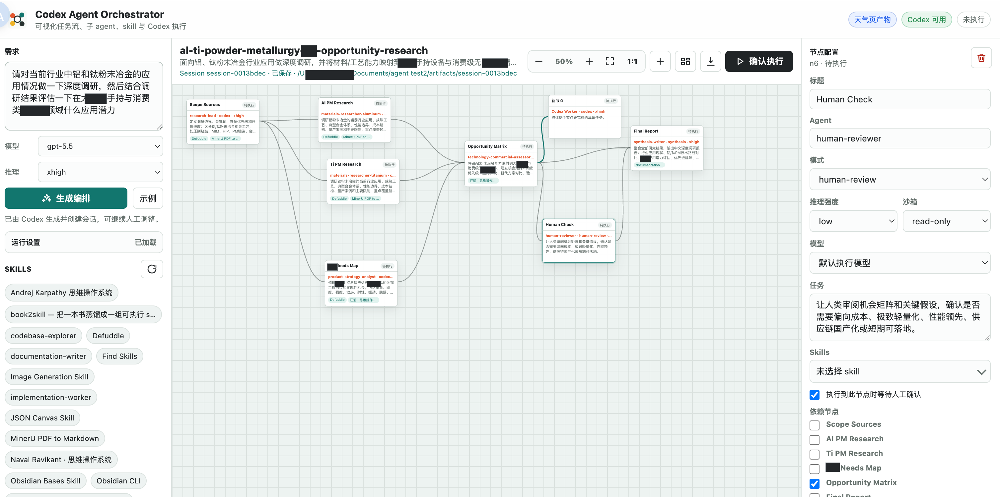

启动服务
npm start打开 http://localhost:8787，进入可视化编排工作台。
这个项目是一个本地可运行的 Agent 工作流设计与执行平台：用户输入目标，系统先生成 DAG 任务图；人可以在画布上改节点、依赖、模型和 skill；确认后后端按依赖调度 Codex 执行，并把日志、产物、会话记录沉淀下来。

项目 README 里有一句很关键：Agent View 的核心不是聊天窗口变多，而是把多个后台 agent 的状态、输入需求和生命周期集中到一个可操作视图里。
一句话定位：用可视化 DAG 管住复杂任务，让 Codex 从「回答者」变成「可调度的执行节点」。
项目没有前端打包流程，Node 20+ 即可运行。真实执行依赖本机 Codex CLI；如果只想演示界面和调度，可以开 mock 模式。
npm start打开 http://localhost:8787，进入可视化编排工作台。
USE_MOCK_CODEX=1 npm start不消耗真实 Codex 调用，节点会输出模拟日志，适合产品演示和流程讲解。
npm test覆盖 planner、runner、config/session、skills、weather 和 folder picker 等核心逻辑。
这里最重要的设计选择，是把「复杂需求」拆成 schema 约束的节点和边。计划可以被人看懂、编辑、保存，也可以被机器调度。
codex exec 按 JSON Schema 输出 DAG 编排，失败时 fallback 到默认草案。
代码规模大约 5,400 行，其中前端交互和样式占较大比例；后端模块按配置、规划、运行、会话、skill 发现分层。
server/index.js 提供静态资源、配置读写、计划生成、运行创建、SSE 事件、人工继续、停止运行等接口。
server/codexRunner.js 封装 codex exec，支持 sandbox、模型、推理强度、schema 输出、超时和取消。
默认把系统记录放在 .orchestrator/sessions，把用户交付物放在 artifacts/<session-id>。
server/planner.js
限制节点数量、去重边、补充 synthesis 节点、套用推理强度偏好。
server/runner.js
按依赖和最大并发调度节点，支持 human-review 暂停、继续、取消和事件广播。
server/sessionStore.js
创建 session，保存原始计划、当前计划、运行快照、conversation.jsonl 和 manifest。
public/app.js
负责状态管理、DAG 画布、节点编辑、撤回、缩放、运行面板和人工确认弹窗。
schemas/orchestration-plan.schema.json 约束了计划必须包含 name、summary、strategy、nodes、edges、maxConcurrency 和 finalDeliverable。
codex 表示可执行节点，human-review 表示人工检查点，synthesis 表示最终汇总。
一个简单判断：如果这个需求值得被保存成一张计划图，并且中途可能需要人审、并行、产物归档，它就适合这个工具。
让不同节点分别负责代码阅读、实现、测试、文档和最终汇总。适合功能开发、重构、缺陷修复和代码审查。
把资料范围、分主题调研、机会矩阵、人工确认、最终报告拆成可并行节点，过程和出处更容易复盘。
选题、资料、草稿、审稿、配图、发布稿可以拆开执行，并在关键节点保留人工判断。
把重复的工程任务流程化，例如生成文档、整理产物、运行检查、输出报告。
它把「agent 如何拆任务、如何并行、如何等待人确认」可视化出来，非常适合作为教学案例。
这不是一个完整商业产品，但已经验证了 Agent View、human-in-the-loop、session artifact 的核心交互。
好工具不是替代所有协作方式，而是把合适的任务变得更可控。这个项目尤其适合阶段多、依赖多、需要复盘的任务。
下面这段可以直接当演讲稿使用。它刻意不从代码细节开始，而是先讲为什么需要这个工具。
过去我们和 AI 协作，主要靠对话。对话很自然，但任务一复杂，就会遇到三个问题：拆解不透明、执行状态不可见、过程很难复盘。 这个项目想解决的就是这个问题：把复杂任务从「一串聊天」变成「一张可操作的任务图」。
Agent Workflow Design and Execution Platform，中文名 Agent 工作流设计与执行平台，是一个本地可运行的可视化 Agent 编排系统。用户输入需求后，后端调用 Codex 或 Claude Code 生成 DAG 计划； 用户在页面里编辑节点和依赖；确认后由 Runner 按依赖执行，遇到人工确认节点就暂停等待。
npm start 启动服务，打开 localhost:8787。机制上分四层：planner 负责把目标变成结构化 JSON；前端负责把 JSON 变成可编辑画布；runner 负责按 DAG 依赖调度； session store 负责把计划、运行、日志和产物保存下来。它的关键不是某个模型，而是把 Agent 执行过程变成可观察、可干预、可复盘的系统。
它适合需要拆解和复盘的任务：软件开发、研究报告、内容生产、多 Agent 教学、本地自动化。反过来，如果只是问一个简单问题，直接对话更快。 这个工具的优势在复杂任务：你能看到谁在做什么、谁依赖谁、哪里卡住、最终产物在哪里。
下一步可以继续补三类能力：更强的节点模板和权限策略，更完整的运行历史和回放，更好的团队协作与外部系统集成。 但当前版本已经证明了一个方向：Agent 产品不一定只是聊天框，也可以是一个可执行的工作流系统。